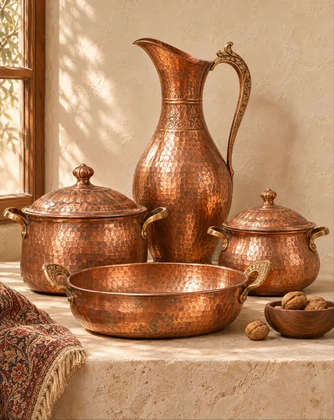

Isfahan · Zandschan · KaschanHandgehämmertes Kupfer
Persisches Kupfergeschirr wird aus einem einzigen Blech getrieben: kalt gehämmert, im Feuer geglüht und erneut gehämmert, bis das Gefäß seine Form hat. Die kleinen Facetten des Hammers brechen das Licht und machen das Metall zugleich härter. Töpfe, Tabletts, Krüge und Samoware werden innen verzinnt, damit sie für Speisen genutzt werden können. Viele Stücke tragen Ghalamzani, feine Gravur mit Meißel und kleinem Hammer, mit Blumen, Vögeln und Jagdszenen. Mit den Jahren bildet Kupfer eine warme Patina, die Sammler ebenso schätzen wie den Glanz.
Geschichte
Metallkunst hat im Iran eine jahrtausendealte Tradition, und in den Kupferbasaren von Isfahan, Kaschan, Zandschan und Kerman schlägt der Hammer noch im alten Takt. Unter den Seldschuken schufen Werkstätten in Chorasan tauschierte Bronze- und Messingarbeiten, die heute in Museen bewahrt werden. Der Basar der Kupferschmiede, die Mesgarha, gehört zu den bekanntesten Klängen einer persischen Stadt.